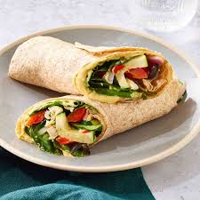

wrap veggie crujiente
una opción vegetal, liviana y con mucha textura gracias a los garbanzos crocantes y las verduras frescas.
15 minutos
2 wraps
vegetariana

ingredientes
- 2 tortillas integrales medianas
- 1 taza de garbanzos cocidos
- 1/2 zanahoria rallada
- 1/2 taza de hojas verdes
- 2 cucharadas de hummus o queso untable
- jugo de medio limón, sal y pimienta
paso a paso
- 1. dorá los garbanzos en sartén con una pizca de sal hasta que queden crujientes.
- 2. untá cada tortilla con hummus y agregá hojas verdes y zanahoria.
- 3. sumá los garbanzos crujientes y rociá con unas gotas de limón.
- 4. enrollá firme el wrap, cortalo al medio y serví.